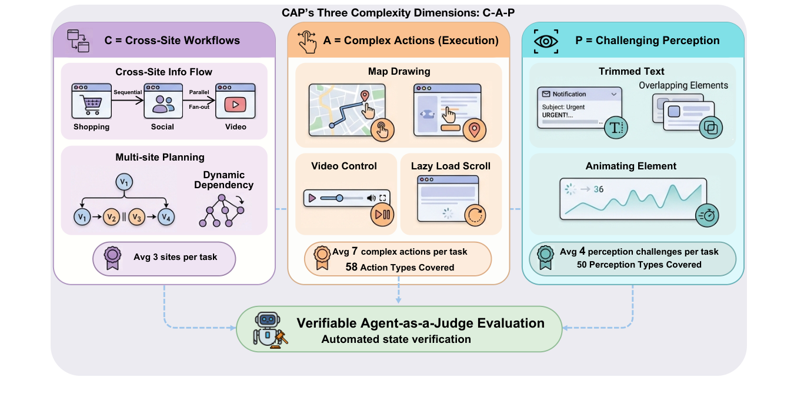
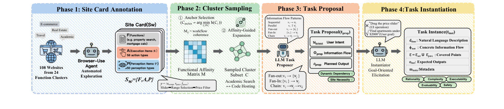
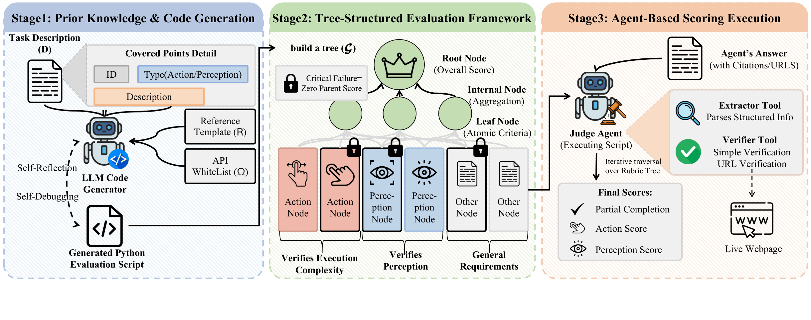

A scalable benchmark of 420 tasks across 108 real-world websites, with a verifiable agent-as-a-judge evaluation framework.
1Macau University of Science and Technology ·
2Tsinghua University ·
3Southeast University ·
4FellouAI ·
5The University of Edinburgh
* Equal contribution † Work done during internship at FellouAI
Large language models are increasingly deployed as autonomous agents that interact with the web through browsers. While recent progress has been driven by benchmarks that evaluate end-to-end task success, these evaluations largely overlook two fundamental sources of difficulty in real web browsing: complex actions over rich user interfaces and visual perception of dynamically rendered content, especially in workflows that span multiple websites.
We introduce CAP, a scalable benchmark for evaluating browser agents on cross-site, human-like web tasks that require non-trivial UI interactions and visual understanding. We adopt a decomposition-and-recomposition pipeline that first abstracts each website into a structured site card capturing user-facing functions, complex execution operations, and perceptual requirements, and then recomposes these components into realistic cross-site workflows.
Built on this framework, we construct 420 tasks across 108 real-world websites in 24 domains under careful quality control. Experiments on state-of-the-art browser agents using our verifiable agent-as-a-judge evaluation framework show low success rates, and reveal that perception-heavy interactions remain a major bottleneck.

A decomposition-and-recomposition pipeline turns websites into structured site cards and recomposes them into coherent cross-site task instances.

For each website w, we annotate a site card
sw = ⟨F, A, P⟩ recording user-facing functions F,
complex execution items A, and perception items P.
Site cards are sampled into coherent cross-site subsets, and an LLM proposer + instantiator
turn those subsets into concrete tasks with explicit covered points for execution and perception.
Each task is automatically converted into a Python evaluation script that materializes a hierarchical rubric tree of independently checkable execution and perception criteria.

Leaves are typed as Action, Perception, or Other, and may be marked critical — a failed critical child propagates a zero up the tree (gating), whereas non-critical children only contribute their averaged score once all critical prerequisites pass. A judge agent traverses the tree, extracts structured information from the agent's answer, and verifies each claim against live webpages.
Even the best agent reaches only 8.0% Success Rate. Fine-grained scoring isolates where agents fail.
Across 7 SOTA browser agents, partial-completion scores cluster around 15–24%, with the strongest commercial system (Comet) reaching 48% only via order-of-magnitude longer outputs.
Systems trail humans by ~9 points more on Complex-P than on Complex-A. Visual reasoning over rendered charts, badges, and expansion states is the dominant failure mode — not UI manipulation per se.
Top systems lean on extensive deliberation (Comet: 100k+ output tokens, Human: 16 minutes per task), but spending time without using it well does not pay off (Browser-Use + GPT-5: 15 min, 15% completion).
Sites with specialized visualizations (CDC dashboards, Google Flights' price-calendar grid) score much lower than text-heavy sites like Wikipedia or AccuWeather.
Numbers are means with one standard deviation. See the full leaderboard for all systems and submission instructions.
If you use CAP-Bench in your work, please cite:
@misc{cap2026,
title = {CAP: A Scalable Benchmark for Evaluating Cross-Site Browser Agents
with Complex Actions and Perception},
author = {Xu, Zejun and Chen, Taiyi and Li, Jin and Gu, Yongtong and Cheng, Qi
and Lv, Aixuan and Zhu, Shuai and Zhu, Pengfei and Yang, Kaichen
and Sun, Boyu and Yang, Yixian and Xie, Mulong and Liu, Xin
and Li, Dagang and Ma, Xiaoteng and Wang, Hongru},
year = {2026},
note = {Preprint, arXiv link forthcoming}
}